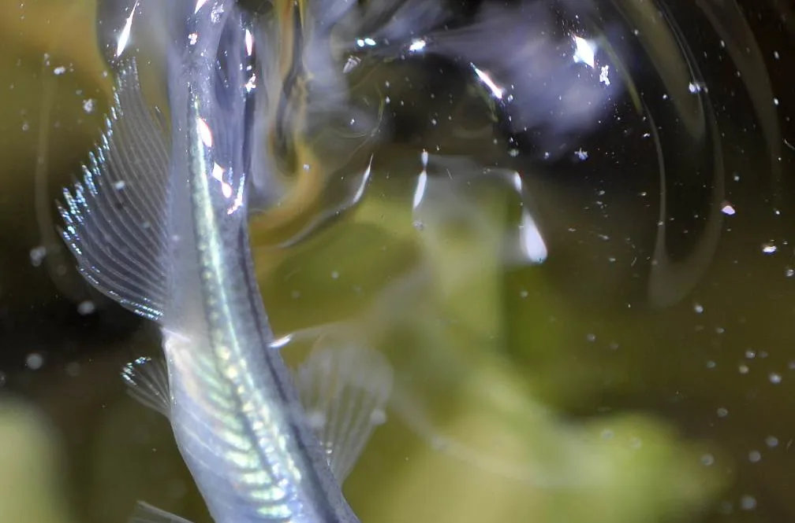
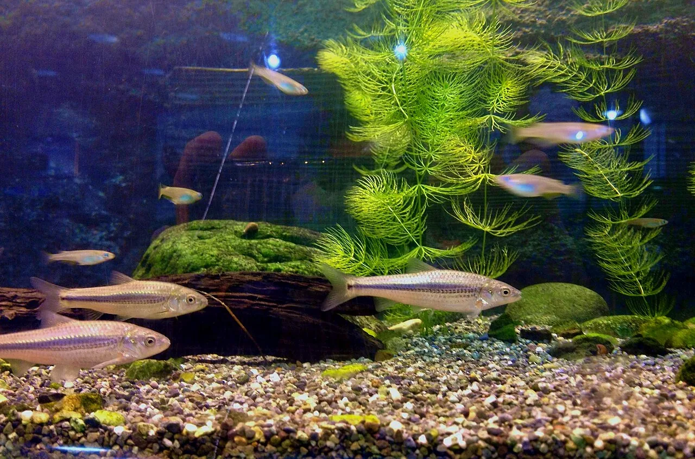

Improved medaka: 500 varieties of an endangered fish
English aquarium sites have discovered medaka — the Japanese rice fish, Oryzias latipes — and will tell you it is hardy, breeds easily, and comes in a startling range of colours. All true. What they generally do not tell you is what is happening underneath: that Japan has produced roughly 500 named varieties in about twenty years, that a single fish has changed hands for a million yen, that the shimmer everyone is buying comes from crystals stacked inside one specific type of pigment cell — and that the wild version of this same fish is listed as Vulnerable by Japan's Environment Ministry, with the release of ornamental medaka named as one of the things harming it. This is the biology and the paradox, from a naturalist's side of the tank glass.

Four pigment cells, and why that matters
Almost every colour in this hobby is a rearrangement of four cell types. Japanese breeders name them constantly and English hobby writing mostly skips them, which is a shame, because once you know the four you can read any variety name and predict roughly what you are looking at.
| Cell | Japanese | What it does |
|---|---|---|
| Melanophore | 黒色素胞 kokushikisohō | Black. Losing it gives the pale and orange forms |
| Xanthophore | 黄色素胞 ōshikisohō | Yellow to orange |
| Leucophore | 白色素胞 hakushikisohō | White, and relatively unusual among fish |
| Iridophore | 虹色素胞 kōshikisohō | Not a pigment at all — stacked guanine crystals that produce structural colour |
That last row is the important one. Iridophores contain no blue or silver pigment. They contain platelets of guanine crystal, and when those platelets are stacked with regular spacing they reflect light by interference — the same physics as a soap film or a beetle's shell, not the same as a dye. The famous dorsal shine of the Miyuki line is exactly this: iridophores along the back arranging their guanine crystals in an orderly way.
This is why the shine behaves oddly compared with ordinary colour. Structural colour shifts with viewing angle and lighting, it does not fade the way pigment does, and it can be selected for "more" in a way that has no obvious ceiling — which is precisely what breeders have spent fifteen years doing.
Medaka is not an incidental hobby animal; it is one of vertebrate biology's model organisms, and the pigment work is real research. Japanese groups working with medaka and zebrafish showed that the gene set required to make melanophores, with the gene Pax7 added on top, produces xanthophores instead — part of untangling how one neural-crest lineage branches into four different colour cells. The ornamental hobby and the developmental genetics are looking at the same cells from opposite ends.
2008: the fish that changed everything
Before the mid-2000s, ornamental medaka meant essentially the orange himedaka that Japanese schoolchildren keep in classroom tanks, plus a few white and blue forms that appeared around 2000. Two fish broke it open.
The first was Youkihi (楊貴妃), from roughly 2004, a deep red-orange far more saturated than anything before it — Japanese sources describe it as the fire-starter of the boom. The second, and the real hinge, was Miyuki (幹之) in 2008: a normal-bodied medaka with a metallic sheen down its spine, a combination previously thought not to be achievable.
Almost the entire modern hobby descends from that one trait. Lame (ラメ, scattered glitter across the scales), tainaikō (internal shine), isshūkō (shine running right around the fish) — Japanese breeders describe these as derivatives of the Miyuki iridophore trait rather than independent inventions. Grades of it acquired their own names: by 2014 a heavily-shining Miyuki was called tetsukamen (鉄仮面), "the iron mask."
Twenty years, five hundred varieties
| Around | What appeared |
|---|---|
| 2000–2003 | White and blue forms; himedaka remains the baseline stock |
| 2004–2007 | Youkihi; albino and amber; the hikari and daruma body types |
| 2008 | Miyuki — normal body plus lustre |
| 2012 | Transparent-scale forms, super black, panda. Also the year medaka was scientifically split into two species, kita-no-medaka and minami-no-medaka |
| 2013–2015 | Lame; then sanshoku (三色), three-coloured fish described as miniature koi |
| 2017 | Orochi (オロチ), an intensely black fish; yozakura; the Matsui long-fin body type |
| 2020–2023 | Blue-lame sapphire; long-fin combinations; continued lame colour work |
The growth curve is steep: roughly 100 varieties by 2017, close to 200 by 2018, over 300 by 2020, and English-language sellers now describe "nearly 500 varieties." Treat all of these as estimates — there is no central registry, naming is done by breeders, and one Japanese source explicitly notes that its dates reflect when a large retailer began stocking a variety rather than when a breeder first produced it.
The million-yen fish
Prices in this hobby are genuinely startling, and the mechanism is worth understanding rather than just gawking at. A newly-fixed trait exists in very few fish; medaka mature fast and spawn daily through summer, so a breeder who secures early stock can multiply it quickly. That combination — extreme scarcity now, rapid multiplication later — produces speculative prices at the moment of release. Japanese sources report individual fish reaching one million yen, and the market ran especially hot during the pandemic, when people were at home and an outdoor tub of medaka was an easy thing to start.
The correct comparison is not tropical fish but koi, or ornamental plants: a Japanese breeding culture built on incremental fixation of traits, with judged shows, named bloodlines and prestige attached to the originator's name.
The part nobody mentions
While ornamental medaka became a boom industry, wild medaka was collapsing. It is listed as Vulnerable (絶滅危惧II類) on Japan's Environment Ministry red list. The causes are the familiar ones for Japanese farmland species: water quality decline, agricultural land consolidation and channel concreting, and predation by introduced fish. A fish that was, within living memory, the single most familiar wild animal in Japan — the one in the nursery song — is now a red-list species while a selectively-bred version of it sells in garden centres.
There is a second layer that makes this sharper than a simple irony. Wild medaka is not one uniform population. Genetic work has shown Japanese medaka divides into distinct regional populations, built up over tens of thousands of years — which is also why the species was formally split in 2012. Conservation of medaka is therefore not just about numbers of fish; it is about keeping those regional genomes separate.
Why you must never release one
This is the practical consequence, and it is the single most important thing in this article.
Releasing medaka into the wild — including ordinary orange himedaka, and including releases done with good intentions in school or community projects — causes genetic disturbance (遺伝的攪乱, identeki kakuran). The released fish interbreed with the local population, and the regional genetic structure that took tens of thousands of years to form is blended away. This is not hypothetical: surveys have found medaka carrying Kansai-region genes in Kantō waters, where they have no business being, and hybridisation has been documented at many sites.
Keep them, breed them, enjoy them — in a tank, a bowl or a tub. If you end up with more fish than you want, rehome them to another keeper or a shop. Never tip them into a pond, stream, paddy or ditch, however natural it looks and however much you feel you are helping. The same logic applies to releasing any aquarium animal anywhere in the world; it is just unusually consequential here, because the wild relative is endangered and geographically structured.
Seeing them in Japan
Ornamental medaka are easy to find. Home centres and garden centres stock them in outdoor tubs through the warm months, aquarium shops carry named varieties, and dedicated medaka farms and speciality shops exist across the country, often with the higher-grade fish priced individually. Summer is the season: the fish are in colour, spawning, and displayed outdoors, which is also how the shine reads best — structural colour needs directional light, and it looks far better in a shallow tub under the sky than under an indoor lamp.
For wild medaka, go to an aquarium rather than a ditch. Nagoya's Higashiyama Zoo and Botanical Gardens has a dedicated medaka facility displaying the wild fish alongside relatives; the photograph of the wild type below was taken there.

If you are buying to take home, note that live fish cross borders under quarantine and import rules that vary by country, and that is your responsibility to check — not the shop's.
The Japanese you'll actually use
| Japanese | Reading | Meaning |
|---|---|---|
| メダカ | medaka | Japanese rice fish |
| 改良メダカ | kairyō medaka | "improved medaka" — the ornamental varieties |
| 品種 | hinshu | variety / breed |
| 体外光 | taigaikō | the external shine along the back |
| ラメ | rame | lamé — scattered glitter on the scales |
| 色素胞 | shikisohō | chromatophore, pigment cell |
| 虹色素胞 | kōshikisohō | iridophore — the guanine-crystal cell |
| 固定率 | koteiritsu | fixation rate — how reliably a trait breeds true |
| 絶滅危惧II類 | zetsumetsu kigu ni-rui | Vulnerable, the wild fish's red-list category |
| 遺伝的攪乱 | identeki kakuran | genetic disturbance — what releasing them causes |
Want these to stick? The free JLPT battle quiz drills nature vocabulary like this with spaced repetition.
The fish that spawns inside a living mussel →, plants that gave up photosynthesis →, the land firefly →, the science of animal colour → and wildlife watching by region →.
Common questions
Q. How many medaka varieties are there?
A. Estimates run to roughly 500. Japanese sources trace about 100 by 2017, close to 200 by 2018 and over 300 by 2020. There is no central registry — breeders name their own lines — so every figure is an estimate that keeps rising.
Q. What makes them shine?
A. Iridophores (虹色素胞), pigment cells containing stacked plates of guanine crystal. The shine is structural colour produced by light interference, not a pigment, which is why it shifts with angle and light. The Miyuki line, from 2008, fixed this along the spine and almost every shiny variety since descends from it.
Q. Which colour cells do medaka have?
A. Four: melanophores (black), xanthophores (yellow), leucophores (white) and iridophores (structural colour). Nearly every variety is a rearrangement of those four, which is why Japanese breeders discuss them constantly.
Q. Is it true a medaka sold for a million yen?
A. Japanese sources report individual fish reaching one million yen. Newly fixed traits exist in very few animals, and because medaka mature quickly and spawn daily in summer, early stock can be multiplied fast — so prices spike at release and fall as supply grows.
Q. Are wild medaka endangered?
A. Yes. Wild medaka is listed as Vulnerable (絶滅危惧II類) on Japan's Environment Ministry red list, from water quality decline, farmland consolidation and channel concreting, and introduced predatory fish — even as ornamental varieties boom.
Q. Can I release medaka into a pond or stream?
A. No. Japanese medaka form distinct regional populations built over tens of thousands of years, and released fish — including ordinary himedaka — interbreed with them and erase that structure. Surveys have found Kansai-type genes in Kantō populations. Rehome surplus fish to another keeper or a shop instead.
Q. Are medaka the same as killifish?
A. Not in the strict sense. Medaka are ricefishes, family Adrianichthyidae, in the order Beloniformes. The fish usually called killifish belong to different families altogether. English shops often blur this.
Q. Where can I see them in Japan?
A. Ornamental varieties are sold at home centres, garden centres, aquarium shops and dedicated medaka farms, and are at their best outdoors in summer. For the wild fish, Higashiyama Zoo and Botanical Gardens in Nagoya has a dedicated medaka display.
Written by naturalists. The variety timeline, the 2008 Miyuki turning point and the derivation of lame, internal shine and full-circle shine from the Miyuki iridophore trait follow Japanese specialist sources documenting the hobby's history, which state that their dates reflect a major retailer's stocking records rather than breeders' first production. The four chromatophore classes and the guanine-platelet basis of iridophore colour are standard fish pigment-cell biology; the Pax7 result on xanthophore specification comes from published work using medaka and zebrafish, reported by Japanese research institutes. Wild medaka's Vulnerable listing, its regional population structure and the genetic-disturbance consequences of release follow the Environment Ministry's red list and ex-situ conservation material, together with reporting of surveys finding Kansai-type genes in Kantō waters. The 2012 split of medaka into two species is reflected in the timeline. Variety counts and the million-yen figure are reported estimates from a market with no central registry, and we present them as such. Nature is full of exceptions; that is what makes it worth studying.